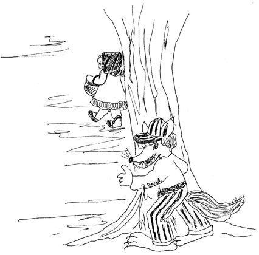

Crvenkapa
Little Red Riding Hood

Pokraj šume selo malo- tako priča ova bajka -u njem' živi Crvenkapa,otac njen i njena majka.
By the woods, a little village(so the fairy tale will tell);Little Red Riding Hood lived therewith her mum and dad as well.
U šumici na proplankugdje no sviće zlatna zora,živjela je njena bakau kućici ispod bora.
In the woods, within a clearingwhere the golden dawns would shine,there her grandmother was livingin a cottage 'neath a pine.
Kroz šumicu staza vodi,kroz gustiše i kroz pruće,kraj potoka, preko mosta,do bakine male kuće.
Through the woods a path was leading,through the thickets, twigs and all,by the brook and past the footbridge,to her grandma's cottage small.
Tu bi mala Crvenkapausred šume, kraj stazice,prošetala svakog dana,i hvatala vjeverice.
Little Riding Hood would wanderevery day along the trackthrough the middle of the forest,chasing squirrels there and back.
Onda, jednog tužnog dana,razboli se njena baka.Plakala je Crvenkapak'o unuka dobra svaka.
Then there came a day of sorrow:Grandmother fell very ill.Riding Hood was weeping for her,as all good grandchildren will.
Spremila je njena majkahrane punu košaricu- mesa, vina i kolača -i pozvala djevojčicu.
Then her mother packed a basket,full of food, a hearty store,meat and wine and cakes, and called herlittle daughter to the door.
"Evo, čedo, nosi baki,ali nemoj skrenut' s puta.Čula sam od lovca Lukeda vuk strašni šumom luta."
"Here, my child, take this to Grandma,but be sure you do not stray.Hunter Luka says a fearsomewolf is in the woods today."
Stazom hita Crvenkapa,ljetno sunce šumom plovi.Cvijeće bere, sluša pticei leptire male lovi.
Riding Hood runs down the pathway,summer sun sails through the sky;she picks flowers, hears the birdsong,chases every butterfly.
I ne gleda kuda ide."Sad ću, bako", tiho zbori.Iza stabla vuk je gledai pred njom se strašan stvori.
Never looking where she's going,"Coming, Grandma!" soft and clear;Wolf, behind a tree, is watching,then, all fearsome, he draws near.
Umiljato vuk upita:"Bi li meni reći znalašto to nosiš u košarii kuda se žuriš, mala?"
Sweetly asks the wolf: "I wonder,could you tell me, little miss,what you carry in your basket,where you're hurrying like this?"
"Idem baki u pohode,nosim vina i kolača,svojoj baki da pomognemda ozdravi, i ojača."
"I am off to visit Grandma,bringing wine and cakes to eat,so that Granny will get betterand be strong upon her feet."
I još reče Crvenkapa:"Tu u šumi živi baka.""Sad ću tamo", vuk pomisli,"već me muči glad prejaka."
Riding Hood went on to tell him:"Grandma lives here in the wood.""Off I go," the wolf is thinking,"I'm half starved, so this is good!"
Vuk kroz šumu hitro juri.Bakicu je progutao,legao u njezin kreveti pidžamu obukao.
Through the woods the wolf runs swiftly.He has swallowed Granny down,then he climbs into her bedand pulls on her sleeping gown.
Na vratima netko kuca."Uđi samo, dušo moja",vuk će na to umiljato,"tebe čeka baka tvoja."
Someone's knocking at the door."Come right in, my darling, do,"says the wolf, so sweet and gentle,"Grandma's waiting here for you."
Crvenkapa mala uđe,krevetu se približila.Ali, jao "Što je ovo?"Od bake se prestrašila.
In steps Little Red Riding Hoodand she comes up to the bed.But, alas! "Why, what is this?"Grandma fills her full of dread.
"Zašto imaš strašne oči,vel'ke ruke, zube, bako?""Da te mogu bolje zgrabit'i progutat', evo tako!"
"Why such dreadful eyes, dear Granny,such big hands and teeth?" she cried."All the better, child, to grab youand to gulp you down inside!"
Pa s kreveta hitro skočita vučina, hulja ljuta,Crvenkapu malu zgrabi,u jedan je mah proguta.
From the bed he leaps up quickly,that great brute, so fierce and mean,grabs the little Riding Hood andswallows her in one gulp, clean.
Tad u bakin krevet leže,tvrdim snom je zahrkao...Šetajući šumom, lovackraj bakine kuće stao.
Then he lies in Grandma's bed,fast asleep, begins to snore...Walking in the woods, the hunterstops by Grandma's cottage door.
Pod prozorom lovac stoji,sluša: nešto strašno krči.Misleć' da je baki loše,u sobicu on utrči.
By the window stands the hunter,hears a dreadful rasping sound;thinking Grandma's taken poorly,in he rushes with a bound.
Al' kad tamo – to vuk hrče!Gdje je baka, što da radi?Hitro vuku kožu para,iz trbuha baku vadi.
But behold, the wolf is snoring!Where is Grandma? He's in doubt.Quick, he slits the wolf's hide open,from its belly pulls her out.
No, da radost bude veća –u vuku se nešto miče."Tu sam, bako! Tu sam, bako!"Crvenkapa sretna kliče.
But, to make the joy still greater,something in there squirms about:"Here I am, Gran! Here I am, Gran!"happy Riding Hood cries out.
Nastala je radost prava.Nema strašnog vuka sada.Svi su sretni i veseli,svud u šumi sreća vlada.
Now true joy is all around;gone the dreadful wolf for good.Everyone is glad and merry;happiness fills all the wood.